41. (Л) Стовпчикові діаграми, стеки, boxplots та інші типи графіків у matplotlib¶
Зміст лекції¶
- Який графік для якого питання
bar: правила хорошої стовпчикової діаграми- Підписи значень:
bar_label - Згруповані стовпчики
- Складені стовпчики:
bottom - Стовпчики 100%: частки цілого
- Від'ємні значення і «водоспад»
- Похибки:
yerrіcapsize - Стовпчикові діаграми в pandas
- Складені площі:
stackplot - Boxplot: п'ять чисел на одному графіку
- Налаштування
boxplot - Violin plot: форма розподілу
- Точки поверх boxplot
- Boxplot у pandas
- Кругова діаграма:
pieі «бублик» - Теплова карта:
imshow - Lollipop і
stem - Приклад: звіт інтернет-магазину
- Типові помилки
- Підсумок
Який графік для якого питання¶
У лекціях 35–39 ми працювали з лініями, гістограмами і scatter. Сьогодні — графіки для категорій і для порівняння розподілів між групами.
| Питання | Графік | Приклад |
|---|---|---|
| Скільки в кожній категорії? | bar, barh |
продажі за містами |
| Як порівняти кілька показників у кожній категорії? | згруповані bar |
продажі за містами у 2024 і 2025 |
| З чого складається ціле в кожній категорії? | складені bar |
продажі за містами з розбиттям на товари |
| Як змінюється склад цілого з часом? | stackplot |
трафік сайту з різних джерел за місяцями |
| Як відрізняються розподіли між групами? | boxplot, violinplot |
зарплати в різних відділах |
| Яка частка кожної частини (2–5 частин)? | pie |
частка платформ: web / android / ios |
| Значення на сітці двох категорій? | imshow (теплова карта) |
замовлення за днями тижня і годинами |
Головна ідея: довжина стовпчика і положення точки на спільній осі — найточніше, що порівнює людське око. Кути (pie), площі та кольори (теплова карта) читаються гірше. Тому bar — вибір за замовчуванням, а решта — для конкретних задач.
bar: правила хорошої стовпчикової діаграми¶
Базовий bar ми бачили в лекції 35. Повторимо і додамо три правила:
- Вісь значень починається з нуля.
- Категорії без природного порядку сортуйте за значенням.
- Підсвічуйте кольором лише те, на що треба звернути увагу.
import matplotlib.pyplot as plt
import numpy as np
cities = ["Lviv", "Kyiv", "Odesa", "Dnipro", "Kharkiv", "Vinnytsia"]
sales = [310, 540, 270, 220, 260, 150]
fig, (ax1, ax2) = plt.subplots(1, 2, figsize=(10, 3.6), layout="constrained")
ax1.bar(cities, sales)
ax1.set_title("As is")
# сортування за спаданням
order = np.argsort(sales)[::-1]
sorted_cities = [cities[i] for i in order]
sorted_sales = [sales[i] for i in order]
# сірий для всіх, синій лише для Lviv
colors = ["tab:blue" if c == "Lviv" else "0.75" for c in sorted_cities]
ax2.bar(sorted_cities, sorted_sales, color=colors)
ax2.set_title("Sorted, one city highlighted")
for ax in (ax1, ax2):
ax.set_ylabel("Sales, thousand UAH")
ax.spines[["top", "right"]].set_visible(False)
plt.show()
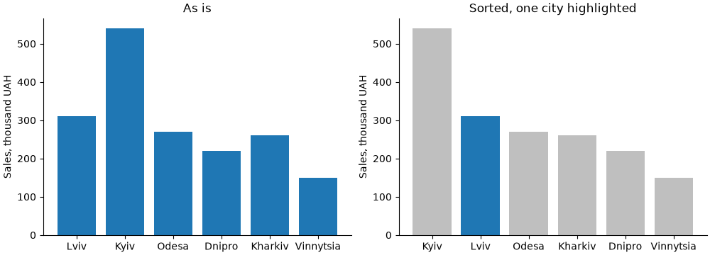
На правому графіку одразу видно, що Львів — другий. На лівому треба порівнювати кожну пару стовпчиків.
np.argsort(sales)повертає індекси, що впорядковують масив за зростанням;[::-1]— за спаданням;colorприймає список кольорів — по одному на стовпчик;"0.75"— відтінок сірого (0 — чорний, 1 — білий).
Коли сортувати не можна
Якщо категорії мають власний порядок — місяці, дні тижня, вікові групи «18–24, 25–34, ...», оцінки 1–5 — зберігайте його. Сортування за значенням зламає читання.
Позиції, ширина, підписи¶
Якщо передати в bar рядки, matplotlib сам розставить стовпчики в позиціях 0, 1, 2, .... Для складніших діаграм (згруповані стовпчики, проміжки між групами) зручніше задавати числові позиції і підписи окремо:
import matplotlib.pyplot as plt
import numpy as np
months = ["Jan", "Feb", "Mar", "Apr", "May", "Jun"]
orders = [120, 135, 160, 150, 185, 210]
x = np.arange(len(months))
fig, axs = plt.subplots(1, 3, figsize=(11, 3.2), sharey=True, layout="constrained")
axs[0].bar(x, orders)
axs[0].set_title("width=0.8 (default)")
axs[1].bar(x, orders, width=0.4)
axs[1].set_title("width=0.4")
axs[2].bar(x, orders, width=1.0, edgecolor="white")
axs[2].set_title('width=1.0, edgecolor="white"')
for ax in axs:
ax.set_xticks(x, months)
plt.show()
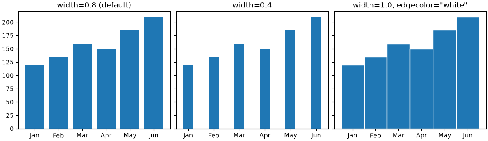
| Параметр | Що задає |
|---|---|
x |
позиції центрів стовпчиків (числа або рядки) |
height |
висота (другий аргумент) |
width |
ширина в одиницях осі x; за замовчуванням 0.8 |
bottom |
де починається стовпчик (для стеків) |
align |
"center" (за замовчуванням) або "edge" — x є лівим краєм |
color, edgecolor, linewidth |
заливка, обводка, товщина обводки |
hatch |
штрихування: "/", "\\", "x", "." |
ax.set_xticks(x, months) одним викликом ставить поділки в позиціях x і підписує їх.
Підписи значень: bar_label¶
ax.bar повертає контейнер стовпчиків BarContainer. Його передають у ax.bar_label, щоб підписати кожен стовпчик:
import matplotlib.pyplot as plt
languages = ["Python", "JavaScript", "Java", "C#", "C++", "Go"]
share = [31.4, 22.8, 15.1, 11.2, 9.6, 4.3]
fig, ax = plt.subplots(figsize=(7, 3.8), layout="constrained")
bars = ax.barh(languages, share, color="tab:blue")
ax.bar_label(bars, fmt="{:.1f}%", padding=3)
ax.invert_yaxis()
ax.set_xlim(0, 36)
# коли є підписи, вісь x не потрібна
ax.xaxis.set_visible(False)
ax.spines[["top", "right", "bottom"]].set_visible(False)
ax.set_title("Most used language among students")
plt.show()
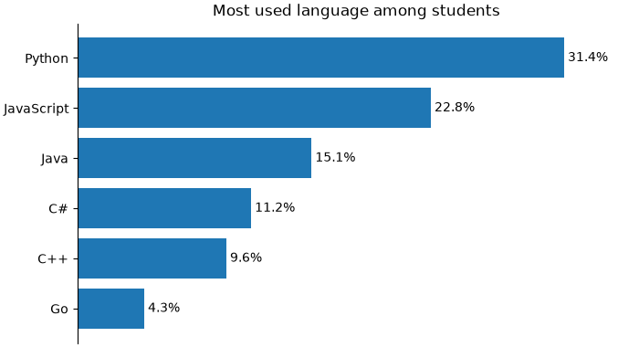
Параметр bar_label |
Що робить |
|---|---|
fmt |
формат: рядок у стилі str.format ("{:.1f}%", "{:,.0f}") |
labels |
власні підписи списком — замість значень |
padding |
відступ від кінця стовпчика в пунктах |
label_type |
"edge" (за замовчуванням) — біля кінця, "center" — посередині стовпчика |
color, fontsize, fontweight |
оформлення тексту |
ax.set_xlim(0, 36) залишає місце праворуч, щоб підпис найдовшого стовпчика не виліз за межі.
Якщо підписи на стовпчиках є, вісь значень і сітка часто зайві — числа вже на графіку. Це робить діаграму чистішою.
Згруповані стовпчики¶
Задача: порівняти продажі в містах за три роки. Для кожного міста — група з трьох стовпчиків поруч.
matplotlib не має окремої функції для цього. Ми самі зсуваємо кожен набір стовпчиків відносно центру групи:
import matplotlib.pyplot as plt
import numpy as np
cities = ["Kyiv", "Lviv", "Odesa", "Kharkiv", "Dnipro"]
sales = {
"2023": [420, 250, 230, 200, 190],
"2024": [480, 290, 240, 230, 200],
"2025": [540, 310, 270, 260, 220],
}
x = np.arange(len(cities))
n = len(sales)
# ширина одного стовпчика: група займає 0.8, решта - проміжок
width = 0.8 / n
fig, ax = plt.subplots(figsize=(9, 4), layout="constrained")
for i, (year, values) in enumerate(sales.items()):
# зсув від центру групи: -width, 0, +width
offset = (i - (n - 1) / 2) * width
bars = ax.bar(x + offset, values, width, label=year)
ax.bar_label(bars, padding=2, fontsize=8)
ax.set_xticks(x, cities)
ax.set(title="Sales by city", ylabel="Sales, thousand UAH", ylim=(0, 600))
ax.legend(title="Year", loc="upper right", ncols=3)
ax.spines[["top", "right"]].set_visible(False)
plt.show()
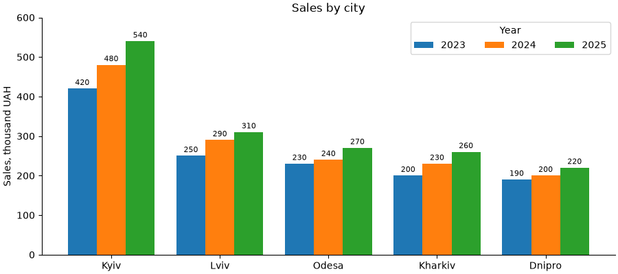
Формула зсуву (i - (n - 1) / 2) * width працює для будь-якого n:
n |
i |
зсув (в одиницях width) |
|---|---|---|
| 2 | 0, 1 | −0.5, +0.5 |
| 3 | 0, 1, 2 | −1, 0, +1 |
| 4 | 0, 1, 2, 3 | −1.5, −0.5, +0.5, +1.5 |
Не більше 3–4 стовпчиків у групі
Що більше стовпчиків, то важче порівняти потрібні. Якщо наборів 5+, краще кілька окремих графіків (subplots(..., sharey=True)) або лінійний графік, якщо це роки.
Групувати можна двома способами — і це різні графіки:
- групи — міста, кольори — роки: зручно порівнювати роки в межах міста (зростання);
- групи — роки, кольори — міста: зручно порівнювати міста в межах року (рейтинг).
Спершу визначте, яке порівняння головне, і саме ці стовпчики ставте поруч.
Складені стовпчики: bottom¶
Складена (stacked) діаграма показує ціле і його частини: висота стовпчика — сума, сегменти — складові.
Параметр bottom задає, де починається стовпчик. Для стека кожен наступний сегмент починається там, де закінчився попередній. Накопичену суму ведемо у змінній:
import matplotlib.pyplot as plt
import numpy as np
months = ["Jan", "Feb", "Mar", "Apr", "May", "Jun"]
# продажі за категоріями товарів, тис. грн
sales = {
"Laptops": np.array([210, 190, 230, 250, 240, 280]),
"Phones": np.array([150, 160, 170, 160, 190, 210]),
"Accessories": np.array([60, 55, 70, 80, 75, 90]),
}
fig, ax = plt.subplots(figsize=(8, 4.2), layout="constrained")
bottom = np.zeros(len(months))
for category, values in sales.items():
bars = ax.bar(months, values, bottom=bottom, label=category)
ax.bar_label(bars, label_type="center", color="white", fontsize=8)
bottom += values
# підпис загальної суми над стовпчиком
ax.bar_label(bars, labels=[f"{v:.0f}" for v in bottom], padding=3,
fontweight="bold")
ax.set(title="Sales by category", ylabel="Thousand UAH", ylim=(0, 650))
ax.legend(loc="upper left", ncols=3)
ax.spines[["top", "right"]].set_visible(False)
plt.show()
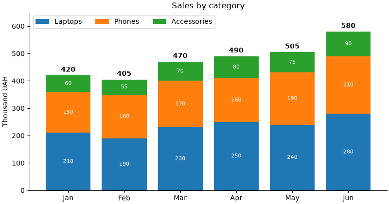
bottom = np.zeros(...)— перший сегмент стоїть на нулі;- після кожного набору
bottom += values— наступний стоїть на попередніх; - після циклу
bottom— загальна сума; її підписуємо над останнім наборомbarsчерезlabels=; label_type="center"— підписи сегментів посередині.
Порівнювати можна лише нижній сегмент і суму
У нижнього сегмента (Laptops) і в суми спільна база — нуль, тож їх легко порівнювати між місяцями. Сегменти вище «стоять» на різній висоті, і порівняти, наприклад, Phones у лютому і травні важко. Найважливішу категорію ставте внизу. Якщо треба порівнювати кожну категорію — згруповані стовпчики або окремі графіки.
Порядок легенди і стека: перший набір — внизу стека, але вгорі вертикальної легенди. Щоб легенда йшла в тому ж порядку, що й сегменти, оберніть її: ax.legend(reverse=True) (matplotlib 3.7+) або через handles, labels = ax.get_legend_handles_labels() і ax.legend(handles[::-1], labels[::-1]) (лекція 37).
Стовпчики 100%: частки цілого¶
Коли суми дуже різні, складений графік показує здебільшого різницю сум. Щоб порівняти склад, нормуйте кожен стовпчик до 100%.
Приклад: результати опитування студентів «Курс корисний?» за шкалою від «повністю не згоден» до «повністю згоден». Горизонтальні стовпчики зручні для довгих назв:
import matplotlib.pyplot as plt
import numpy as np
from matplotlib.ticker import PercentFormatter
courses = ["Python", "Databases", "Networks", "Math", "English"]
answers = ["Strongly disagree", "Disagree", "Neutral", "Agree", "Strongly agree"]
# кількість відповідей: рядок - курс, стовпчик - варіант відповіді
counts = np.array([
[2, 4, 10, 40, 34],
[5, 10, 20, 30, 15],
[8, 12, 25, 22, 13],
[15, 20, 20, 15, 10],
[3, 5, 15, 25, 12],
])
# частки: ділимо кожен рядок на його суму
shares = counts / counts.sum(axis=1, keepdims=True)
colors = ["#ca0020", "#f4a582", "#d9d9d9", "#92c5de", "#0571b0"]
fig, ax = plt.subplots(figsize=(10, 3.8), layout="constrained")
left = np.zeros(len(courses))
for j, answer in enumerate(answers):
bars = ax.barh(courses, shares[:, j], left=left, color=colors[j],
label=answer, height=0.6)
ax.bar_label(bars, labels=[f"{v:.0%}" if v >= 0.07 else "" for v in shares[:, j]],
label_type="center", fontsize=8)
left += shares[:, j]
ax.invert_yaxis()
ax.xaxis.set_major_formatter(PercentFormatter(xmax=1))
ax.set_xlim(0, 1)
# pad - відступ заголовка, щоб над графіком помістилася легенда
ax.set_title("Is the course useful? (share of answers)", pad=24)
ax.legend(loc="lower center", bbox_to_anchor=(0.5, 1.0), ncols=5, fontsize=8,
frameon=False)
plt.show()
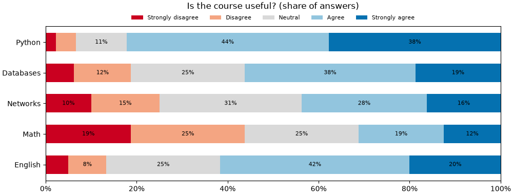
- для
barhзамістьbottom—left, замістьwidth—height; counts.sum(axis=1, keepdims=True)— суми рядків як стовпець(5, 1); broadcasting (лекція 27) ділить кожен рядок на його суму;f"{v:.0%}"— форматування частки як відсотка:0.42→42%;- підписи для дуже вузьких сегментів (менше 7%) не показуємо — вони не помістяться;
- кольори — розбіжна шкала: червоний «не згоден», сірий нейтральний, синій «згоден». Порядок відповідей має сенс, тому кольори теж упорядковані.
Кольори зі шкали
Замість ручного списку можна взяти кольори з колірної карти (лекція 39): plt.get_cmap("RdBu")(np.linspace(0.1, 0.9, 5)) — п'ять рівномірних кольорів від червоного до синього.
Від'ємні значення і «водоспа件
Колір за знаком¶
Прибуток і збиток, відхилення від плану, зміна відносно минулого року — значення бувають від'ємними. bar малює такі стовпчики вниз від нуля. Колір за знаком і лінія нуля роблять графік очевидним:
import matplotlib.pyplot as plt
import numpy as np
months = ["Jan", "Feb", "Mar", "Apr", "May", "Jun",
"Jul", "Aug", "Sep", "Oct", "Nov", "Dec"]
profit = np.array([12, 8, -5, 15, 22, -3, -12, -8, 18, 25, 30, 41])
colors = np.where(profit >= 0, "tab:green", "tab:red")
fig, ax = plt.subplots(figsize=(9, 3.8), layout="constrained")
bars = ax.bar(months, profit, color=colors)
ax.bar_label(bars, fmt="{:+d}", padding=2, fontsize=8)
ax.axhline(0, color="black", linewidth=0.8)
ax.set(title="Monthly profit", ylabel="Thousand UAH", ylim=(-20, 48))
ax.spines[["top", "right", "bottom"]].set_visible(False)
ax.tick_params(axis="x", length=0)
plt.show()
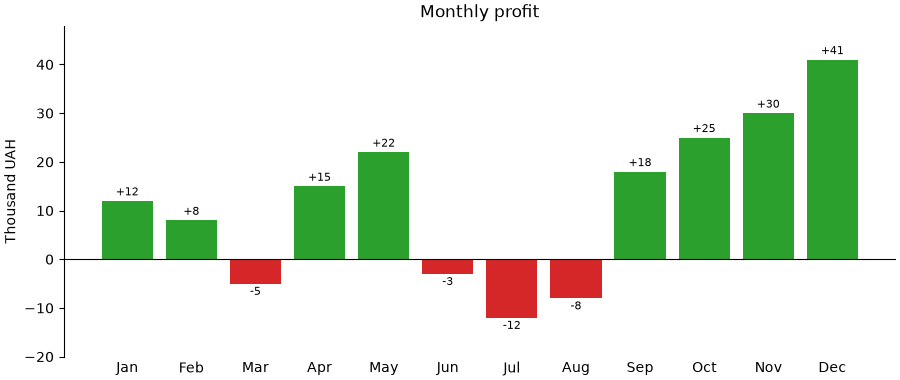
np.where(умова, a, b)(лекція 27) — масив кольорів: зелений для>= 0, червоний для решти;fmt="{:+d}"— ціле число завжди зі знаком:+12,-5;bar_labelдля від'ємних стовпчиків сам ставить підпис під стовпчиком;ax.axhline(0, ...)— лінія нуля замість нижньої рамки.
Діаграма-водоспад¶
«Водоспад» (waterfall) показує, як початкове значення змінюється через низку приростів і втрат. Кожен стовпчик «висить» там, де закінчився попередній — це той самий bottom:
import matplotlib.pyplot as plt
import numpy as np
steps = ["Revenue", "Cost of goods", "Salaries", "Rent", "Marketing", "Other"]
values = np.array([1000, -420, -260, -90, -70, 55])
# де закінчується кожен крок
ends = np.cumsum(values)
# де починається: 0 для першого, далі - кінець попереднього
starts = np.concatenate([[0], ends[:-1]])
print("ends: ", ends)
print("starts:", starts)
colors = ["tab:blue"] + ["tab:green" if v > 0 else "tab:red" for v in values[1:]]
fig, ax = plt.subplots(figsize=(9, 4), layout="constrained")
bars = ax.bar(steps, values, bottom=starts, color=colors)
ax.bar_label(bars, labels=[f"{v:+d}" for v in values], label_type="center",
color="white", fontweight="bold")
# підсумковий стовпчик
profit = ends[-1]
total = ax.bar("Profit", profit, color="0.3")
ax.bar_label(total, padding=3)
# тонкі лінії-сходинки між стовпчиками
for i in range(len(steps)):
ax.plot([i + 0.4, i + 0.6], [ends[i], ends[i]], color="0.5", linewidth=0.8)
ax.set(title="From revenue to profit", ylabel="Thousand UAH")
ax.spines[["top", "right"]].set_visible(False)
plt.show()
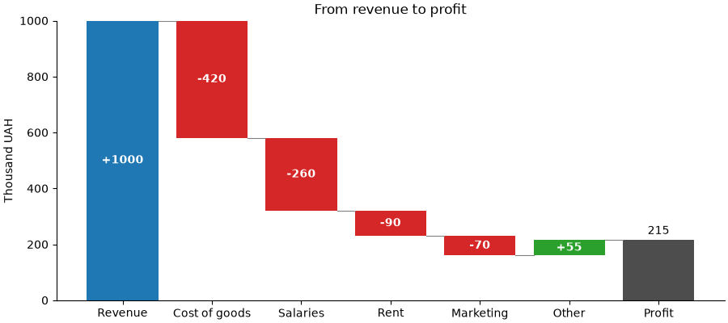
Від'ємна висота з bottom малює стовпчик вниз від bottom: стовпчик -420 з bottom=1000 займає проміжок від 580 до 1000. Тому окремо рахувати «нижній край» не треба — достатньо np.cumsum.
Похибки: yerr і capsize¶
Середнє значення без розкиду може вводити в оману: різниця 72 проти 75 балів нічого не означає, якщо розкид ±10. yerr додає «вуса» похибки до кожного стовпчика:
import matplotlib.pyplot as plt
import numpy as np
rng = np.random.default_rng(1)
groups = ["KI-31", "KI-32", "KI-33", "KI-34"]
scores = [rng.normal(mu, 10, size=25) for mu in (72, 75, 68, 80)]
means = [s.mean() for s in scores]
# стандартна похибка середнього: std / sqrt(n)
errors = [s.std(ddof=1) / np.sqrt(len(s)) for s in scores]
for g, m, e in zip(groups, means, errors):
print(f"{g}: {m:.1f} +- {e:.1f}")
fig, ax = plt.subplots(figsize=(6.5, 4), layout="constrained")
ax.bar(groups, means, yerr=errors, capsize=6, color="tab:blue", alpha=0.8,
error_kw={"elinewidth": 1.5})
ax.set(title="Mean exam score (error bars: standard error)", ylabel="Score",
ylim=(0, 100))
ax.spines[["top", "right"]].set_visible(False)
plt.show()
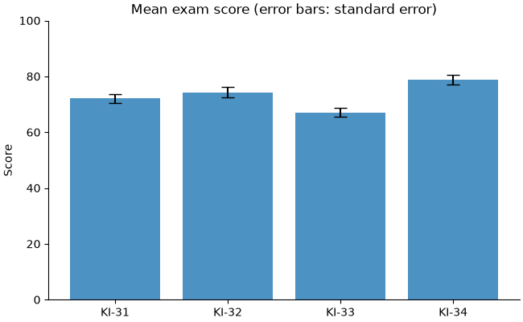
yerr— одне число, масив (симетрична похибка) або масив2 × n(окремо вниз і вгору);capsize— ширина «капелюшків» на кінцях у пунктах;error_kw— словник параметрів для ліній похибки;- для
barh—xerr.
Завжди пишіть, що означають вуса
Вуса можуть бути стандартним відхиленням (розкид даних), стандартною похибкою середнього (точність оцінки середнього) або довірчим інтервалом. Це дуже різні величини: стандартна похибка в sqrt(n) разів менша за відхилення. Без підпису графік неможливо прочитати правильно.
Для окремих точок без стовпчиків є ax.errorbar(x, y, yerr=..., fmt="o", capsize=...).
Стовпчикові діаграми в pandas¶
DataFrame.plot.bar() і plot.barh() будують згруповані і складені стовпчики без ручних зсувів: рядки — групи на осі, стовпці — набори з кольорами і легендою.
import matplotlib.pyplot as plt
import numpy as np
import pandas as pd
rng = np.random.default_rng(2)
orders = pd.DataFrame({
"city": rng.choice(["Kyiv", "Lviv", "Odesa", "Kharkiv"], size=600,
p=[0.4, 0.25, 0.2, 0.15]),
"platform": rng.choice(["web", "android", "ios"], size=600, p=[0.5, 0.3, 0.2]),
})
# кількість замовлень: рядки - міста, стовпці - платформи
table = orders.groupby(["city", "platform"]).size().unstack()
table = table.loc[table.sum(axis=1).sort_values(ascending=False).index]
print(table)
fig, (ax1, ax2) = plt.subplots(1, 2, figsize=(11, 3.8), layout="constrained")
table.plot.bar(ax=ax1, rot=0)
ax1.set(title="Grouped", xlabel="", ylabel="Orders")
table.plot.bar(ax=ax2, stacked=True, rot=0)
ax2.set(title="Stacked", xlabel="")
plt.show()
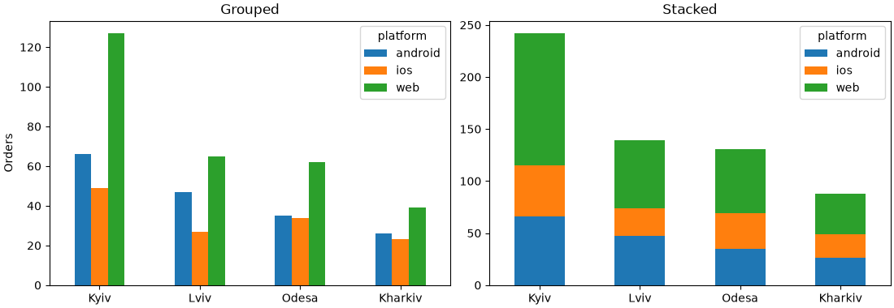
groupby([...]).size()— кількість у кожній парі (лекція 34);.unstack()переносить другий рівень індексу (platform) у стовпці;- рядки сортуємо за загальною сумою;
ax=ax1— малювати на нашомуAxes, а не створювати нову фігуру;rot=0— горизонтальні підписи (за замовчуванням pandas повертає їх на 90°);- метод повертає
Axes, тож далі — звичайніset,legend,bar_label.
Для 100% достатньо поділити на суми рядків: table.div(table.sum(axis=1), axis=0).plot.barh(stacked=True).
pd.crosstab(orders["city"], orders["platform"]) — те саме, що groupby + size + unstack, одним викликом.
Складені площі: stackplot¶
Коли категорія по осі x — це час із багатьма точками (12 місяців, 52 тижні), складені стовпчики стають строкатими. Складені площі (stackplot) показують те саме неперервно:
import matplotlib.pyplot as plt
import numpy as np
months = np.arange(1, 25)
rng = np.random.default_rng(3)
# відвідувачі сайту за джерелами, тис.
search = 40 + 1.5 * months + rng.normal(0, 3, size=24)
social = 10 + 0.08 * months ** 2 + rng.normal(0, 2, size=24)
direct = 25 + rng.normal(0, 2, size=24)
ads = np.where(months > 12, 15, 5) + rng.normal(0, 1.5, size=24)
labels = ["Search", "Direct", "Social", "Ads"]
fig, (ax1, ax2) = plt.subplots(1, 2, figsize=(11, 3.8), layout="constrained")
ax1.stackplot(months, search, direct, social, ads, labels=labels, alpha=0.85)
ax1.set(title="Visitors by source", xlabel="Month", ylabel="Thousand visitors",
xlim=(1, 24))
ax1.legend(loc="upper left", reverse=True)
# 100%: ділимо на загальну суму в кожному місяці
data = np.vstack([search, direct, social, ads])
shares = data / data.sum(axis=0)
ax2.stackplot(months, shares, labels=labels, alpha=0.85)
ax2.set(title="Share of visitors", xlabel="Month", ylim=(0, 1), xlim=(1, 24))
ax2.yaxis.set_major_formatter("{x:.0%}")
plt.show()
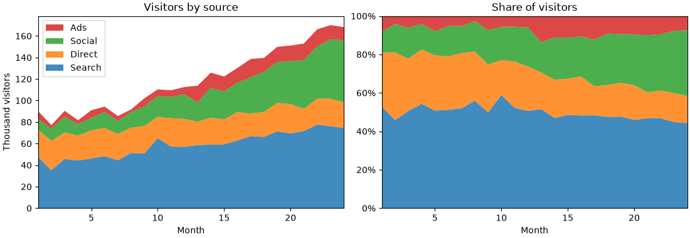
stackplot(x, y1, y2, ...)абоstackplot(x, Y), деY— 2D-масив, рядок — один набір;- перший набір — унизу;
legend(reverse=True)(matplotlib 3.7+) показує легенду в порядку шарів знизу вгору; yaxis.set_major_formatter("{x:.0%}")— форматер із рядка (лекція 37).
Тут працює те саме обмеження, що й для складених стовпчиків: точно читається лише нижній шар і загальна сума. Якщо головне — динаміка кожного джерела окремо, кращий звичайний лінійний графік із чотирма лініями.
Boxplot: п'ять чисел на одному графіку¶
Гістограма (лекція 39) добре показує розподіл одного набору. Але як порівняти розподіли зарплат у восьми відділах? Вісім гістограм — забагато. Boxplot («ящик з вусами») стискає розподіл до кількох чисел, і десятки груп поміщаються на одному графіку.
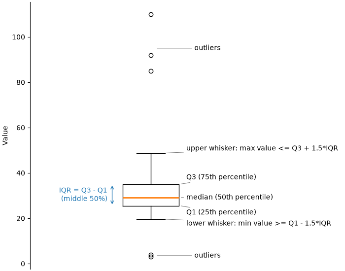
| Елемент | Значення |
|---|---|
| лінія всередині ящика | медіана (Q2, 50-й перцентиль) |
| нижній край ящика | Q1 — 25-й перцентиль |
| верхній край ящика | Q3 — 75-й перцентиль |
| висота ящика | IQR = Q3 − Q1, міжквартильний розмах; в ящику — середні 50% даних |
| вуса | до найдальшого значення в межах Q1 − 1.5·IQR … Q3 + 1.5·IQR |
| окремі точки | викиди — значення за межами вусів |
Порахуємо ці числа вручну через np.percentile (лекція 30) і порівняємо з тим, що малює matplotlib:
import matplotlib.pyplot as plt
import numpy as np
rng = np.random.default_rng(4)
salary = np.concatenate([rng.lognormal(np.log(30), 0.2, size=95),
[85, 92, 110, 4, 3]])
q1, median, q3 = np.percentile(salary, [25, 50, 75])
iqr = q3 - q1
low_limit = q1 - 1.5 * iqr
high_limit = q3 + 1.5 * iqr
# вуса - до найдальших значень у межах
whisker_low = salary[salary >= low_limit].min()
whisker_high = salary[salary <= high_limit].max()
outliers = salary[(salary < low_limit) | (salary > high_limit)]
print(f"Q1={q1:.1f}, median={median:.1f}, Q3={q3:.1f}, IQR={iqr:.1f}")
print(f"whiskers: {whisker_low:.1f} .. {whisker_high:.1f}")
print(f"outliers: {np.sort(outliers).round(1)}")
fig, ax = plt.subplots(figsize=(4, 5), layout="constrained")
ax.boxplot(salary)
ax.set(title="Salary", ylabel="Thousand UAH", xticks=[])
plt.show()
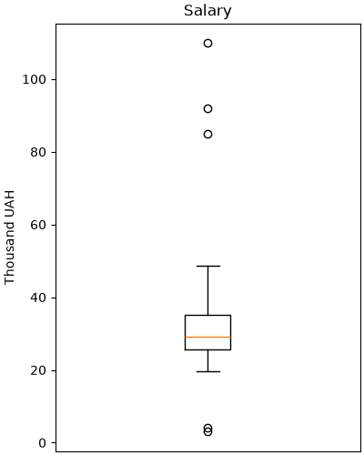
Boxplot чесно показує асиметрію: верхній вус довший за нижній, медіана ближче до низу ящика — у даних довгий правий хвіст.
Чому 1.5 · IQR
Це домовленість (правило Тьюкі), а не закон природи. Для нормального розподілу за межами 1.5·IQR лежить лише ~0.7% значень, тож точки там справді незвичні. Але «викид» на boxplot — це сигнал перевірити дані, а не підстава їх видалити.
Налаштування boxplot¶
На практиці boxplot потрібен для порівняння груп. Передайте список масивів — по одному на групу:
import matplotlib.pyplot as plt
import numpy as np
rng = np.random.default_rng(5)
departments = ["Sales", "Support", "Dev", "QA", "HR"]
params = [(28, 0.45), (22, 0.2), (55, 0.35), (38, 0.25), (30, 0.2)]
data = [rng.lognormal(np.log(m), s, size=80) for m, s in params]
fig, axs = plt.subplots(1, 3, figsize=(12, 4), sharey=True, layout="constrained")
axs[0].boxplot(data, tick_labels=departments)
axs[0].set_title("default")
axs[1].boxplot(data, tick_labels=departments, showmeans=True, notch=True,
flierprops={"marker": "o", "markersize": 4, "alpha": 0.5})
axs[1].set_title("showmeans, notch, flierprops")
box = axs[2].boxplot(data, tick_labels=departments, patch_artist=True,
widths=0.6, medianprops={"color": "black", "linewidth": 1.5})
for patch, color in zip(box["boxes"], plt.get_cmap("Set2").colors):
patch.set_facecolor(color)
axs[2].set_title("patch_artist + colors")
axs[0].set_ylabel("Salary, thousand UAH")
for ax in axs:
ax.grid(axis="y", alpha=0.3)
plt.show()
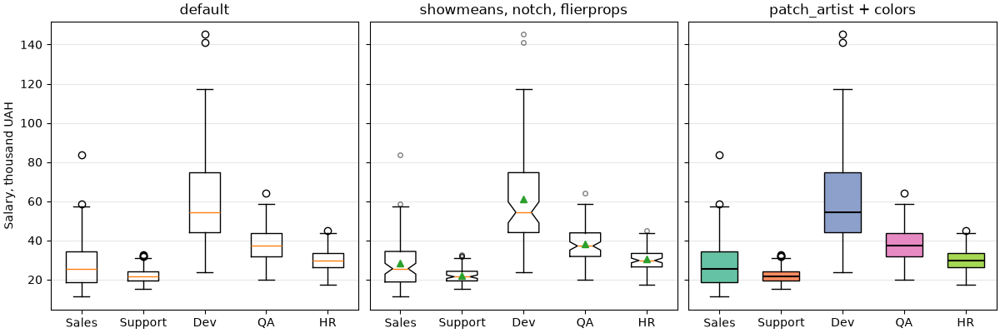
| Параметр | Що робить |
|---|---|
tick_labels |
підписи груп |
orientation |
"vertical" (за замовчуванням) або "horizontal" |
widths |
ширина ящиків |
whis |
довжина вусів у IQR (за замовчуванням 1.5); (5, 95) — вуса до 5-го і 95-го перцентилів |
showmeans |
позначити середнє (зелений трикутник) |
notch |
«виріз» біля медіани — приблизний 95% довірчий інтервал медіани |
showfliers |
False — не показувати викиди |
patch_artist |
True — ящики стають заливними фігурами, їм можна задати колір |
boxprops, medianprops, whiskerprops, capprops, flierprops, meanprops |
словники стилю для кожної частини |
boxplot повертає словник із частинами графіка: "boxes", "medians", "whiskers", "caps", "fliers", "means". Це списки об'єктів, кожен можна налаштувати окремо — як у циклі з set_facecolor вище.
Як читати notch: якщо вирізи двох ящиків не перекриваються, медіани, найімовірніше, справді різні. На середньому графіку вирізи Dev і решти не перекриваються.
Середнє проти медіани: у Sales трикутник (середнє) помітно вище медіанної лінії — великі зарплати кількох людей «тягнуть» середнє вгору. Це ознака правого хвоста.
Старі версії matplotlib
tick_labels з'явився в matplotlib 3.9 (раніше — labels), orientation — у 3.10 (раніше — vert=False для горизонтальних). Якщо у вас стара версія і параметр не працює, оновіть matplotlib: pip install -U matplotlib.
Горизонтальний boxplot і сортування¶
Як і для bar, групи без природного порядку краще сортувати — за медіаною:
import matplotlib.pyplot as plt
import numpy as np
rng = np.random.default_rng(5)
departments = ["Sales", "Support", "Dev", "QA", "HR"]
params = [(28, 0.45), (22, 0.2), (55, 0.35), (38, 0.25), (30, 0.2)]
data = [rng.lognormal(np.log(m), s, size=80) for m, s in params]
# сортування за медіаною
order = np.argsort([np.median(d) for d in data])
data_sorted = [data[i] for i in order]
labels_sorted = [departments[i] for i in order]
fig, ax = plt.subplots(figsize=(8, 3.8), layout="constrained")
ax.boxplot(data_sorted, tick_labels=labels_sorted, orientation="horizontal",
widths=0.5)
ax.set(title="Salary by department (sorted by median)",
xlabel="Salary, thousand UAH")
ax.grid(axis="x", alpha=0.3)
plt.show()
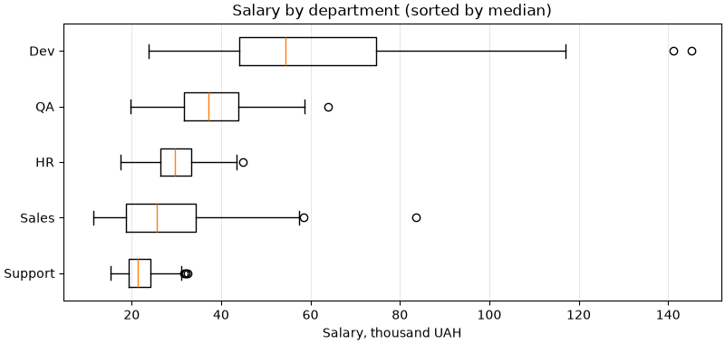
Горизонтальний варіант зручний, коли груп багато або назви довгі.
Violin plot: форма розподілу¶
Boxplot має слабке місце: він не бачить «горбів». Два набори нижче мають майже однакові квартилі — і однакові ящики, хоча розподіли зовсім різні:
import matplotlib.pyplot as plt
import numpy as np
rng = np.random.default_rng(6)
one_peak = rng.normal(50, 20, size=500)
two_peaks = np.concatenate([rng.normal(36, 5, size=250),
rng.normal(64, 5, size=250)])
data = [one_peak, two_peaks]
labels = ["one peak", "two peaks"]
for name, d in zip(labels, data):
print(f"{name:9}: Q1={np.percentile(d, 25):.1f}, "
f"median={np.median(d):.1f}, Q3={np.percentile(d, 75):.1f}")
fig, (ax1, ax2) = plt.subplots(1, 2, figsize=(9, 4), sharey=True, layout="constrained")
ax1.boxplot(data, tick_labels=labels)
ax1.set_title("boxplot: looks the same")
parts = ax2.violinplot(data, showmedians=True)
for body in parts["bodies"]:
body.set_facecolor("tab:orange")
body.set_alpha(0.6)
ax2.set_xticks([1, 2], labels)
ax2.set_title("violinplot: shows the shape")
plt.show()
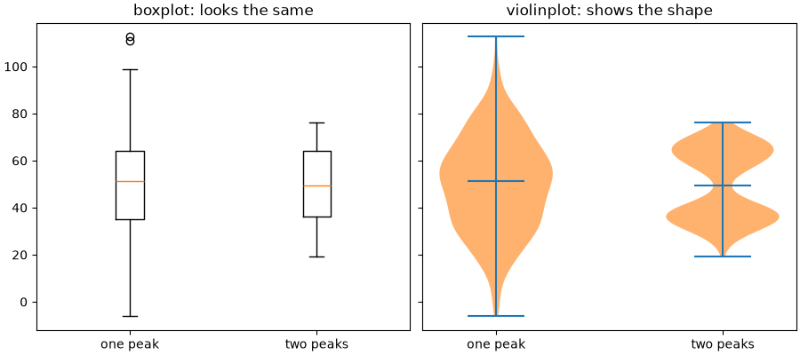
Ящики подібні, а «скрипка» праворуч одразу показує дві групи і майже порожню середину — там, де boxplot малює медіану.
Violin plot — це згладжена гістограма, віддзеркалена симетрично: ширина «скрипки» на певній висоті — наскільки часто трапляються такі значення.
Параметр violinplot |
Що робить |
|---|---|
positions |
позиції по осі (за замовчуванням 1, 2, ...) |
widths |
максимальна ширина |
showmedians, showmeans |
лінії медіани, середнього |
showextrema |
лінії мінімуму й максимуму (за замовчуванням True) |
quantiles |
список квантилів для кожного набору, наприклад [[0.25, 0.75]] * n |
bw_method |
ширина згладжування: менше число — більше деталей і шуму |
orientation |
"vertical" або "horizontal" (3.10+) |
violinplot не має параметра підписів — їх ставимо через set_xticks. Повертає словник: "bodies" — список фігур-«скрипок», "cmedians", "cmins", "cmaxes"... У прикладі вище колір «скрипок» змінено в циклі по parts["bodies"] — так само, як ящики boxplot.
Що обрати
- boxplot — багато груп, важливі медіана, квартилі і викиди; зрозумілий більшості читачів;
- violin — важлива форма розподілу (кілька «горбів», асиметрія); потребує 30+ значень у групі, інакше згладжування вигадує форму.
Точки поверх boxplot¶
Коли значень у групі небагато (до кількох сотень), найчесніше — показати кожне. Точки з невеликим випадковим зсувом по горизонталі (jitter) не накладаються одна на одну:
import matplotlib.pyplot as plt
import numpy as np
rng = np.random.default_rng(7)
groups = ["KI-31", "KI-32", "KI-33"]
scores = [rng.normal(72, 10, size=25).clip(0, 100),
rng.normal(78, 6, size=12).clip(0, 100),
np.concatenate([rng.normal(60, 6, size=15), rng.normal(88, 4, size=15)])]
fig, ax = plt.subplots(figsize=(7, 4.5), layout="constrained")
ax.boxplot(scores, tick_labels=groups, widths=0.5, showfliers=False,
medianprops={"color": "black"})
for i, values in enumerate(scores, start=1):
# випадковий зсув по x, щоб точки не злилися
x = i + rng.uniform(-0.12, 0.12, size=len(values))
ax.scatter(x, values, s=18, alpha=0.6, zorder=3)
ax.text(i, 102, f"n={len(values)}", ha="center", fontsize=9, color="0.4")
ax.set(title="Exam scores", ylabel="Score", ylim=(30, 106))
ax.grid(axis="y", alpha=0.3)
plt.show()
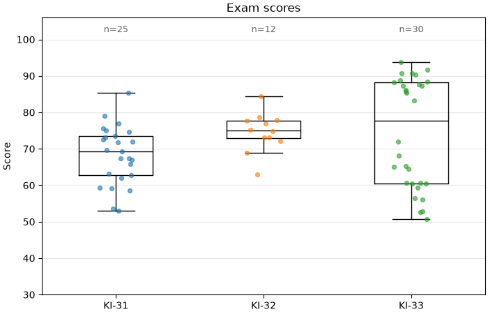
showfliers=False— викиди і так видно серед точок, без нього вони б подвоїлися;zorder=3— точки над ящиками;- підпис
n=...— скільки значень у групі. Ящик із 12 точок виглядає так само «солідно», як із 1000, і безnцього не видно; - у KI-33 видно дві підгрупи — boxplot сам по собі цього не показав би.
Boxplot у pandas¶
Для даних у «довгому» форматі (стовпець значень + стовпець групи) зручний DataFrame.boxplot з by:
import matplotlib.pyplot as plt
import numpy as np
import pandas as pd
rng = np.random.default_rng(8)
df = pd.DataFrame({
"department": rng.choice(["Dev", "QA", "Sales"], size=300),
"level": rng.choice(["junior", "middle", "senior"], size=300),
})
base = df["department"].map({"Dev": 40, "QA": 30, "Sales": 25})
k = df["level"].map({"junior": 0.6, "middle": 1.0, "senior": 1.6})
df["salary"] = base * k * rng.lognormal(0, 0.15, size=300)
print(df.groupby("department")["salary"].describe().round(1))
fig, (ax1, ax2) = plt.subplots(1, 2, figsize=(11, 4), layout="constrained")
df.boxplot(column="salary", by="department", ax=ax1, grid=False)
ax1.set(title="By department", xlabel="", ylabel="Salary, thousand UAH")
df.boxplot(column="salary", by="level", ax=ax2, grid=False)
ax2.set(title="By level", xlabel="")
# pandas додає свій загальний заголовок - прибираємо його
fig.suptitle("")
plt.show()
count mean std min 25% 50% 75% max
department
Dev 93.0 43.4 19.1 15.9 25.4 38.3 60.5 104.0
QA 111.0 32.6 14.9 12.5 19.0 27.6 47.0 63.4
Sales 96.0 28.0 11.7 10.2 17.3 26.2 37.6 59.0
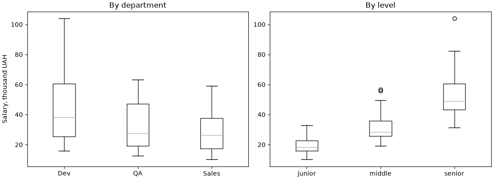
column— що розподіляємо,by— за чим групуємо;- групи впорядковані за алфавітом; для власного порядку зробіть стовпець категоріальним (
pd.Categorical(..., categories=[...], ordered=True)) або зберіть список масивів і викличтеax.boxplotсамі; describe()дає ті самі числа, що й ящик:25%,50%,75%,min,max.
Кругова діаграма: pie і «бубли껶
Кругова діаграма показує частки одного цілого. Вона читається гірше за стовпчики: око погано порівнює кути. Але для 2–4 частин з помітно різними частками, коли головне повідомлення «яка частина від цілого», вона зрозуміла.
import matplotlib.pyplot as plt
platforms = ["Web", "Android", "iOS", "Other"]
orders = [480, 310, 190, 20]
fig, (ax1, ax2) = plt.subplots(1, 2, figsize=(10, 4.2), layout="constrained")
ax1.pie(orders, labels=platforms, autopct="%1.0f%%", startangle=90,
counterclock=False, wedgeprops={"edgecolor": "white"})
ax1.set_title("Pie")
# "бублик": кільце замість круга
ax2.pie(orders, labels=platforms, autopct="%1.0f%%", startangle=90,
counterclock=False, pctdistance=0.8,
wedgeprops={"width": 0.4, "edgecolor": "white"})
ax2.text(0, 0, f"{sum(orders)}\norders", ha="center", va="center",
fontsize=14, fontweight="bold")
ax2.set_title("Donut")
plt.show()
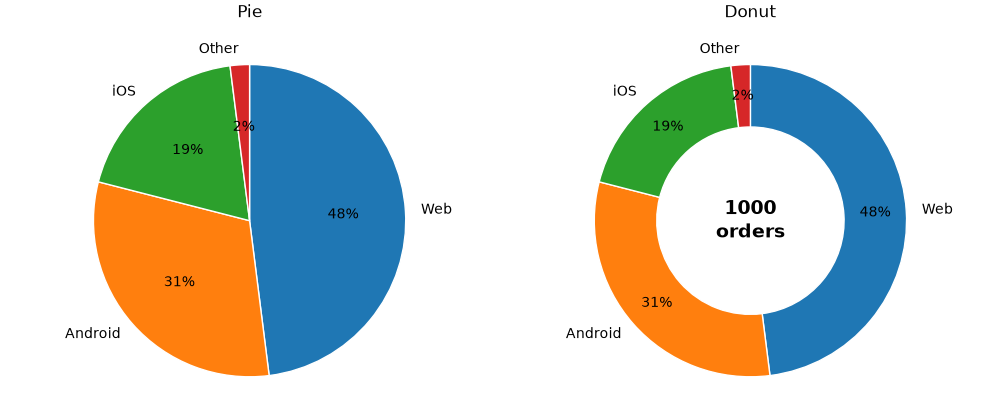
| Параметр | Що робить |
|---|---|
labels |
підписи секторів |
autopct |
формат відсотків усередині: "%1.0f%%" → 48% (старий %-формат; %% — знак відсотка) |
startangle=90, counterclock=False |
перший сектор починається вгорі і йде за годинниковою стрілкою — як читаємо годинник |
wedgeprops |
стиль секторів; width < 1 перетворює круг на кільце |
pctdistance |
де ставити відсотки: частка радіуса |
explode |
список зсувів секторів від центру, щоб «висунути» один |
pie сам рахує частки: передавайте кількість, не відсотки.
Порівняйте той самий набір даних, представлений двома способами:
import matplotlib.pyplot as plt
languages = ["Python", "JavaScript", "Java", "C#", "C++", "Go", "Rust"]
share = [24, 21, 17, 14, 12, 7, 5]
fig, (ax1, ax2) = plt.subplots(1, 2, figsize=(10, 4), layout="constrained")
ax1.pie(share, labels=languages, startangle=90, counterclock=False,
wedgeprops={"edgecolor": "white"})
ax1.set_title("Which is bigger: Java or C#?")
bars = ax2.barh(languages, share, color="tab:blue")
ax2.bar_label(bars, fmt="{}%", padding=3)
ax2.invert_yaxis()
ax2.xaxis.set_visible(False)
ax2.spines[["top", "right", "bottom"]].set_visible(False)
ax2.set_title("Same data as bars")
plt.show()
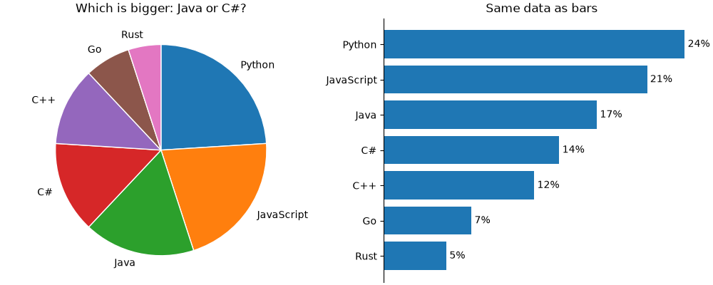
На круговій діаграмі сектори Java, C# і C++ важко впорядкувати. На стовпчиках — миттєво.
Коли не використовувати pie
- частин більше ~5;
- частки близькі одна до одної;
- треба порівняти кілька цілих (кілька «пирогів» поруч) — краще 100%-стовпчики;
- частини не складаються в ціле (наприклад, відповіді з кількома варіантами, сума > 100%);
- 3D-ефекти і «висунуті» сектори — завжди спотворюють пропорції.
Теплова карта: imshow¶
Теплова карта показує числа в таблиці кольором: рядки і стовпці — дві категорії, колір клітинки — значення. Класичний приклад — активність за днями тижня і годинами:
import matplotlib.pyplot as plt
import numpy as np
rng = np.random.default_rng(9)
days = ["Mon", "Tue", "Wed", "Thu", "Fri", "Sat", "Sun"]
hours = np.arange(8, 24, 2)
# кількість замовлень: рядок - день, стовпець - година
evening = np.exp(-((hours - 20) ** 2) / 12)
lunch = 0.6 * np.exp(-((hours - 13) ** 2) / 4)
weekend = np.array([1, 1, 1, 1, 1.2, 1.6, 1.5]).reshape(-1, 1)
orders = 100 * (evening + lunch) * weekend + rng.normal(0, 5, size=(7, 8))
# кількість не може бути від'ємною і дробовою
orders = np.clip(orders, 0, None).round().astype(int)
fig, ax = plt.subplots(figsize=(9, 4.5), layout="constrained")
img = ax.imshow(orders, cmap="YlOrRd", aspect="auto")
fig.colorbar(img, ax=ax, label="Orders")
ax.set_xticks(np.arange(len(hours)), [f"{h}:00" for h in hours])
ax.set_yticks(np.arange(len(days)), days)
# число в кожній клітинці; колір тексту залежить від фону
threshold = orders.max() * 0.6
for i in range(orders.shape[0]):
for j in range(orders.shape[1]):
value = orders[i, j]
color = "white" if value > threshold else "black"
ax.text(j, i, f"{value}", ha="center", va="center", color=color,
fontsize=9)
ax.set_title("Orders by day and hour")
ax.tick_params(length=0)
ax.spines[:].set_visible(False)
plt.show()
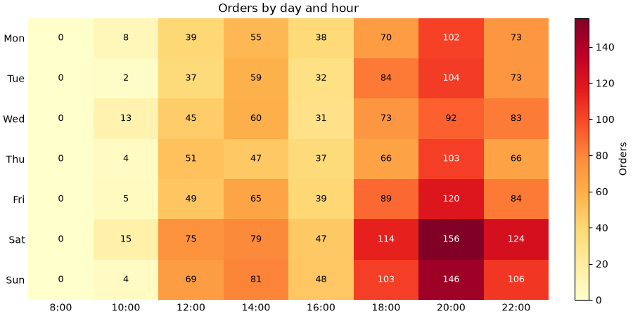
imshow(2D-масив)малює кожен елемент як клітинку: рядокi— по осіy, стовпецьj— по осіx;aspect="auto"— клітинки розтягуються під розмір графіка (без нього вони квадратні);- центр клітинки
[i, j]має координати(x=j, y=i)— томуax.text(j, i, ...); - перший рядок угорі — як у таблиці;
- для темних клітинок — білий текст, інакше його не прочитати.
Видно два «гарячі» періоди — обід і вечір — і що у вихідні вечірній пік сильніший.
Колірну карту обирайте за правилами з лекції 39: послідовна (YlOrRd, viridis, Blues) — для кількості; розбіжна (RdBu_r) з симетричними vmin/vmax — для відхилень і кореляцій.
Матриця кореляцій¶
Теплова карта — стандартний спосіб показати df.corr() (лекція 34):
import matplotlib.pyplot as plt
import numpy as np
import pandas as pd
rng = np.random.default_rng(10)
n = 200
hours = rng.uniform(0, 10, size=n)
df = pd.DataFrame({
"study_hours": hours,
"attendance": 50 + 4 * hours + rng.normal(0, 8, size=n),
"sleep_hours": 8 - 0.2 * hours + rng.normal(0, 1, size=n),
"games_hours": 6 - 0.4 * hours + rng.normal(0, 1.5, size=n),
})
df["score"] = 40 + 4 * df["study_hours"] + 1.5 * df["sleep_hours"] + rng.normal(0, 6, size=n)
corr = df.corr()
fig, ax = plt.subplots(figsize=(6.5, 5.5), layout="constrained")
img = ax.imshow(corr, cmap="RdBu_r", vmin=-1, vmax=1)
fig.colorbar(img, ax=ax, label="Correlation")
ticks = np.arange(len(corr))
ax.set_xticks(ticks, corr.columns, rotation=45, ha="right")
ax.set_yticks(ticks, corr.columns)
for i in ticks:
for j in ticks:
value = corr.iloc[i, j]
ax.text(j, i, f"{value:.2f}", ha="center", va="center",
color="white" if abs(value) > 0.6 else "black", fontsize=9)
ax.set_title("Correlation matrix")
plt.show()
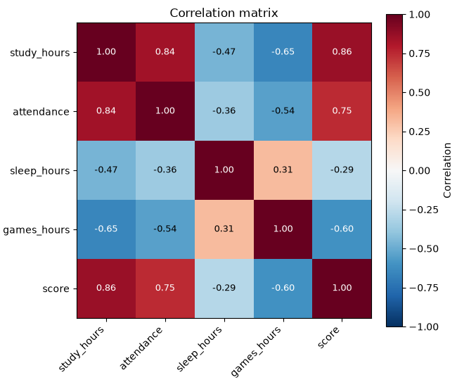
vmin=-1, vmax=1 — повна шкала кореляції: білий — нуль, червоний — позитивна, синій — негативна.
Lollipop і stem¶
Коли категорій багато, ряд товстих стовпчиків стає важким «парканом». Lollipop («льодяник») — тонка лінія з точкою на кінці. Він передає ту саму довжину, але з меншою кількістю «чорнила»:
import matplotlib.pyplot as plt
import numpy as np
products = ["Mouse", "Keyboard", "Monitor", "Headphones", "Webcam", "Laptop stand",
"USB hub", "SSD", "Router", "Microphone", "Speakers", "Charger"]
rating = np.array([4.6, 4.4, 4.7, 4.1, 3.6, 4.3, 3.9, 4.8, 4.0, 4.2, 3.8, 4.5])
order = np.argsort(rating)
y = np.arange(len(products))
fig, ax = plt.subplots(figsize=(7, 5), layout="constrained")
ax.hlines(y, 0, rating[order], color="0.7", linewidth=2)
ax.scatter(rating[order], y, s=60, color="tab:blue", zorder=3)
for yi, r in zip(y, rating[order]):
ax.text(r + 0.08, yi, f"{r:.1f}", va="center", fontsize=9)
ax.set_yticks(y, [products[i] for i in order])
ax.set(title="Average product rating", xlim=(0, 5.3))
ax.spines[["top", "right", "left"]].set_visible(False)
ax.tick_params(axis="y", length=0)
plt.show()
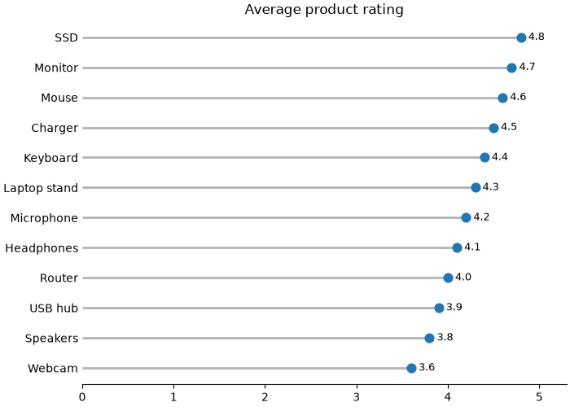
ax.hlines(y, xmin, xmax)— горизонтальні відрізки; для вертикальних —ax.vlines(x, ymin, ymax);- точки — звичайний
scatterповерх.
Те саме для вертикального випадку робить ax.stem(x, y) — він зручний для дискретних сигналів і послідовностей:
import matplotlib.pyplot as plt
import numpy as np
days = np.arange(1, 31)
rng = np.random.default_rng(11)
# зміна кількості користувачів відносно попереднього дня
change = rng.normal(0, 15, size=30).round()
fig, ax = plt.subplots(figsize=(9, 3.4), layout="constrained")
markers, stems, base = ax.stem(days, change)
stems.set_color("0.6")
base.set_color("black")
ax.set(title="Daily change in active users", xlabel="Day", ylabel="Users")
plt.show()
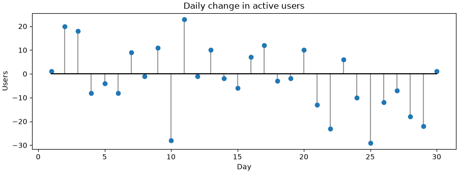
stem повертає три частини: маркери, «стебла» і базову лінію — кожну можна стилізувати окремо.
Приклад: звіт інтернет-магазину¶
Зберемо графіки лекції в один звіт. Згенеруємо замовлення інтернет-магазину за рік і відповімо на питання:
- Як змінювалась виручка за місяцями і з яких категорій вона складається?
- Як відрізняється сума замовлення між категоріями?
- Через які платформи надходять замовлення?
- Коли покупці найактивніші?
import matplotlib.pyplot as plt
import numpy as np
import pandas as pd
rng = np.random.default_rng(2025)
# 1. дані: 5000 замовлень за 2025 рік
n = 5000
categories = ["Laptops", "Phones", "Audio", "Accessories"]
base_price = {"Laptops": 32, "Phones": 18, "Audio": 4, "Accessories": 1.2}
df = pd.DataFrame({
"date": pd.to_datetime("2025-01-01")
+ pd.to_timedelta(rng.integers(0, 365, size=n), unit="D"),
"category": rng.choice(categories, size=n, p=[0.15, 0.25, 0.25, 0.35]),
"platform": rng.choice(["Web", "Android", "iOS"], size=n, p=[0.5, 0.3, 0.2]),
"hour": rng.choice(np.arange(24), size=n,
p=np.r_[np.full(8, 0.5), np.full(10, 3), np.full(6, 6)] / 70),
})
df["amount"] = (df["category"].map(base_price)
* rng.lognormal(0, 0.35, size=n)).round(2)
# грудень: розпродаж, на 40% більше замовлень
december = df.sample(frac=0.04, random_state=1).copy()
december["date"] = pd.to_datetime("2025-12-01") + pd.to_timedelta(
rng.integers(0, 31, size=len(december)), unit="D")
df = pd.concat([df, december], ignore_index=True)
df["month"] = df["date"].dt.month
df["weekday"] = df["date"].dt.dayofweek
print(f"orders: {len(df)}, revenue: {df['amount'].sum():,.0f} thousand UAH")
print(df.groupby("category")["amount"].median().round(2))
# 2. рисунок
fig, axd = plt.subplot_mosaic([["revenue", "revenue", "platform"],
["box", "heat", "heat"]],
figsize=(14, 8), layout="constrained")
# виручка за місяцями, складені стовпчики за категоріями
ax = axd["revenue"]
monthly = df.pivot_table(index="month", columns="category", values="amount",
aggfunc="sum")[categories]
bottom = np.zeros(12)
for category in categories:
ax.bar(monthly.index, monthly[category], bottom=bottom, label=category)
bottom += monthly[category].to_numpy()
ax.set_xticks(range(1, 13), ["Jan", "Feb", "Mar", "Apr", "May", "Jun",
"Jul", "Aug", "Sep", "Oct", "Nov", "Dec"])
ax.set(title="Monthly revenue by category", ylabel="Thousand UAH")
ax.legend(loc="upper left", ncols=4)
ax.spines[["top", "right"]].set_visible(False)
# платформи: частки, горизонтальні стовпчики
ax = axd["platform"]
platform_share = df["platform"].value_counts(normalize=True).sort_values()
bars = ax.barh(platform_share.index, platform_share.to_numpy(), color="0.6")
ax.bar_label(bars, fmt="{:.0%}", padding=3)
ax.set(title="Orders by platform", xlim=(0, 0.6))
ax.xaxis.set_visible(False)
ax.spines[["top", "right", "bottom"]].set_visible(False)
# сума замовлення: boxplot, логарифмічна вісь
ax = axd["box"]
amounts = [df.loc[df["category"] == c, "amount"] for c in categories]
box = ax.boxplot(amounts, tick_labels=categories, patch_artist=True,
medianprops={"color": "black"},
flierprops={"marker": ".", "alpha": 0.3})
for patch, color in zip(box["boxes"], plt.rcParams["axes.prop_cycle"].by_key()["color"]):
patch.set_facecolor(color)
patch.set_alpha(0.7)
ax.set_yscale("log")
ax.set(title="Order amount", ylabel="Thousand UAH (log scale)")
ax.tick_params(axis="x", rotation=20)
# активність: день тижня x година
ax = axd["heat"]
heat = pd.crosstab(df["weekday"], df["hour"])
img = ax.imshow(heat, cmap="YlOrRd", aspect="auto")
fig.colorbar(img, ax=ax, label="Orders")
ax.set_yticks(range(7), ["Mon", "Tue", "Wed", "Thu", "Fri", "Sat", "Sun"])
ax.set_xticks(range(0, 24, 2), [f"{h}:00" for h in range(0, 24, 2)])
ax.set(title="Orders by weekday and hour", xlabel="Hour")
ax.tick_params(length=0)
fig.suptitle("Online store: 2025 report (simulated data)", fontweight="bold")
fig.savefig("store_report.png", dpi=150)
plt.show()
orders: 5200, revenue: 58,220 thousand UAH
category
Accessories 1.21
Audio 4.06
Laptops 31.81
Phones 17.87
Name: amount, dtype: float64
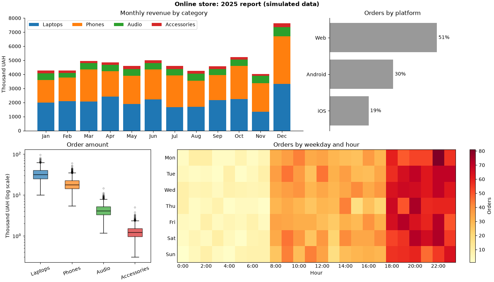
Що видно:
- виручка — стабільна протягом року, у грудні сплеск; основна частина — ноутбуки й телефони, хоча аксесуарів продають найбільше штук. Ноутбуки — нижній шар, тому їх легко порівнювати між місяцями;
- платформи — половина замовлень з вебу;
- сума замовлення — категорії відрізняються на порядки, тому вісь логарифмічна (лекція 37). Без неї ящики Audio та Accessories злилися б в одну лінію біля нуля;
- активність — більшість замовлень увечері, 18:00–23:00; уночі майже нічого. Від дня тижня активність майже не залежить.
Що тут використано:
subplot_mosaic— широкий графік зверху і три менші;pivot_table+bottom— складені стовпчики;value_counts(normalize=True)+barh+bar_label(fmt="{:.0%}")— частки;boxplot(patch_artist=True)+set_yscale("log")— порівняння розподілів різного масштабу;pd.crosstab+imshow+colorbar— теплова карта.
Типові помилки¶
Вісь bar не з нуля. Довжина стовпчика — це значення. Обрізана вісь перетворює різницю в 2% на «удвічі». Для точок, ліній і boxplot нуль не обов'язковий; для стовпчиків — обов'язковий.
Несортовані категорії. Якщо в категорій немає власного порядку, сортуйте за значенням — рейтинг читається одразу.
Сортування впорядкованих категорій. Місяці, дні тижня, оцінки, вікові групи — у природному порядку.
Згруповані стовпчики «налазять» один на одного. Ширина одного стовпчика — 0.8 / n, зсув — (i - (n - 1) / 2) * width.
Стек без bottom (або без накопичення). Без bottom усі набори малюються з нуля і перекривають один одного. bottom треба оновлювати після кожного набору: bottom += values.
Порівняння верхніх сегментів стека. Точно читаються лише нижній сегмент і сума. Для порівняння кожної категорії — згруповані стовпчики або окремі графіки.
Легенда стека в протилежному порядку. Перший набір — унизу стека, але вгорі легенди. handles[::-1], labels[::-1] або legend(reverse=True).
Похибки без пояснення. Стандартне відхилення, стандартна похибка і довірчий інтервал — різні величини. Пишіть, що показують вуса.
Boxplot для маленьких груп без точок. Ящик із 8 значень виглядає так само, як із 8000. Додайте точки з jitter і n=.
Boxplot для даних із кількома «горбами». Ящик їх не покаже. Перевірте гістограмою або violin plot.
Видалення «викидів» лише тому, що вони за вусами. Точки за 1.5·IQR — сигнал перевірити дані, а не помилка.
labels= у boxplot у новому matplotlib. Параметр перейменовано на tick_labels (3.9+); vert=False замінено на orientation="horizontal" (3.10+).
pie з багатьма або близькими частками. Кути порівнюються погано. 2–4 частини з помітною різницею — максимум; інакше barh.
Відсотки в pie, які не складаються в 100%. pie нормує все до цілого. Якщо частини не утворюють ціле, кругова діаграма бреше.
Теплова карта без чисел і colorbar. Колір неможливо прочитати точно. Додайте colorbar, а для невеликих таблиць — числа в клітинках з контрастним кольором тексту.
Розбіжні дані в послідовній карті. Кореляції, відхилення — RdBu_r з vmin=-a, vmax=a.
Підсумок¶
- Вибір графіка: кількість у категоріях —
bar/barh; кілька показників — згруповані; частини цілого — складені або 100%; склад у часі —stackplot; розподіли за групами —boxplot/violinplot; дві категорії — теплова карта; 2–4 частки —pie. bar: нуль на осі значень, сортування за значенням, підсвічування кольором; числові позиції +set_xticks(x, labels);width,align,hatch.bar_label:fmt="{:.1f}%",labels=[...],padding,label_type="center".- Згруповані:
width = 0.8 / n, зсув(i - (n - 1) / 2) * width. - Складені:
bottom(дляbarh—left), накопиченняbottom += values; важливе — внизу; 100% — ділення на суму рядка. - Від'ємні: колір через
np.where,axhline(0); водоспад —bottom=np.cumsum(...)зі зсувом. - Похибки:
yerr/xerr,capsize,error_kw; завжди пояснюйте, що це. - pandas:
groupby(...).size().unstack()абоpd.crosstab→plot.bar(stacked=..., ax=ax, rot=0);df.boxplot(column=..., by=...). stackplot(x, Y)— складені площі для часових рядів.boxplot: медіана, Q1/Q3, IQR, вуса1.5·IQR, викиди;tick_labels,orientation,showmeans,notch,whis,patch_artist+box["boxes"].violinplot: форма розподілу;showmedians,quantiles, підписи черезset_xticks.- Точки з jitter поверх boxplot +
showfliers=False+n=. pie:autopct,startangle=90,counterclock=False; бублик —wedgeprops={"width": 0.4}; частіше кращеbarh.- Теплова карта:
imshow(2D, cmap, aspect="auto")+colorbar+ax.text(j, i, ...); кореляції —RdBu_r,vmin=-1, vmax=1. - Lollipop:
hlines+scatter;stemдля послідовностей.
Корисні посилання¶
- matplotlib:
Axes.bar - matplotlib:
Axes.bar_label - Grouped bar chart with labels (gallery)
- Stacked bar chart (gallery)
- Discrete distribution as horizontal bar chart (gallery)
- matplotlib:
Axes.stackplot - matplotlib:
Axes.boxplot - Box plot vs. violin plot comparison (gallery)
- matplotlib:
Axes.pie - Creating annotated heatmaps (gallery)
- pandas: Chart visualization
Знайшли помилку чи бажаєте додати інформацію, щоб покращити курс? Створіть issue на GitHub